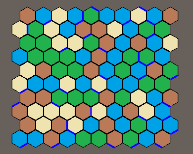

In this example we are going to create a HexMap with a rectangular shape and will assign a random value to each of those tiles which we will visualise by using different colors. We then will add the HexMouse component to get the position of the mouse and display the tile the cursor is on as well as the closest tile and edge. When clicking a tile it will change its value.
As in the previous example we will add the using statements for our library and position the camera correctly so these things are not covered again here.
This time we will need a few more prefabs & variables :
[SerializeField] private Vector2Int mapSize = new Vector2Int(13, 13);
[SerializeField] private GameObject tilePrefab = null;
[SerializeField] private GameObject edgePrefab = null;
[SerializeField] private GameObject tileMarker = null;
[SerializeField] private GameObject edgeMarker = null;
[SerializeField] private GameObject cornerMarker = null;
[SerializeField] private List<Material> materials = null;
private HexMap<int,bool> hexMap;
private HexMouse hexMouse = null;
private GameObject[] tileObjects;
Now it is time to create our map:
void Start ()
{
hexMap = new HexMap<int, bool>(HexMapBuilder.CreateRectangularShapedMap(mapSize), null);
hexMouse = gameObject.AddComponent<HexMouse>();
hexMouse.Init(hexMap);
tileObjects = new GameObject[hexMap.TilesByPosition.Count];
foreach (var tile in hexMap.Tiles)
{
tile.Data = (Random.Range(0, 4));
GameObject instance = GameObject.Instantiate(tilePrefab);
instance.GetComponent<Renderer>().material = materials[tile.Data];
instance.name = "MapTile_" + tile.Position;
instance.transform.position = tile.CartesianPosition;
tileObjects[tile.Index] = instance;
}
foreach (var edge in hexMap.Edges)
{
int randomNumber = Random.Range(0, 100);
if (randomNumber > 89)
{
edge.Data = true;
GameObject instance = GameObject.Instantiate(edgePrefab);
instance.name = "MapEdge_" + edge.Position;
instance.transform.position = edge.CartesianPosition;
instance.transform.rotation = Quaternion.Euler(0, edge.EdgeAlignmentAngle, 0);
}
}
SetupCamera();
}
If you run the scene now, it should look similar to this:

Finally we add our update method which will highlight the current tile and closest edge of our mouse position and when we leftclick we will change the value of the current tile
void Update ()
{
if (!hexMouse.CursorIsOnMap) return;
Vector3Int mouseTilePosition = hexMouse.TileCoord;
Vector3Int mouseEdgePosition = hexMouse.ClosestEdgeCoord;
Vector3Int mouseCornerPosition = hexMouse.ClosestCornerCoord;
tileMarker.transform.position = HexConverter.TileCoordToCartesianCoord(mouseTilePosition, 0.1f);
edgeMarker.transform.position = HexConverter.EdgeCoordToCartesianCoord(mouseEdgePosition);
edgeMarker.transform.rotation = Quaternion.Euler(0, hexMap.EdgesByPosition[mouseEdgePosition].EdgeAlignmentAngle, 0);
cornerMarker.transform.position = HexConverter.CornerCoordToCartesianCoord(mouseCornerPosition);
if (Input.GetMouseButtonDown(0))
{
Tile<int> t = hexMap.TilesByPosition[mouseTilePosition];
int curValue = t.Data;
t.Data = ((curValue + 1) % 4);
tileObjects[t.Index].GetComponent<Renderer>().material = materials[t.Data];
}
}
This concludes this example, now let's continue with the next [ADD LINK]